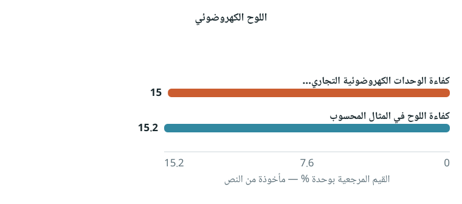

اللوح الكهروضوئي
Photovoltaic Cell
جهاز يحوّل الإشعاع الشمسي مباشرة إلى كهرباء عبر أثر الفوتوفولطية في شبه موصل؛ كفاءة الوحدات التجارية نحو 15% وترتفع إلى نحو 25% في الأحدث.
اللوح الكهروضوئي جهاز يحوّل الإشعاع الشمسي مباشرة إلى كهرباء. ينص Çengel أن التحويل المباشر ممكن بأنظمة الخلايا الكهروضوئية، وأن النظام يتكوّن من مصفوفة من الخلايا الشمسية، وأن فهم عملها يحتاج فيزياء النظرية الذرية وأشباه الموصلات. والخلية ثنائي p–n: الفوتون ذو طاقة أكبر من فجوة النطاق يولّد زوج إلكترون–فجوة، والمجال الكهربائي الداخلي في منطقة النضوب يفصل الزوجين فينشأ تيار. ويُقاس الأداء عند الظرف القياسي: إشعاع 1000 W/m² وطيف AM1.5 وحرارة 25 °C. وتذكر إدارة معلومات الطاقة الأمريكية أن كفاءة الوحدات التجارية كانت نحو 15% في 2015 وتقترب من 25% في الأحدث، وأن عمر الخلية نحو 20 إلى 35 سنة وفق Çengel. وكفاءة بهذا القدر تعني أن القدرة المعتبرة تحتاج مساحة كبيرة، وهو الفرق الجوهري بينها وبين المجمع الحراري.
كيف تعمل الظاهرة؟
الآلية في ثلاث طبقات. أولاً الامتصاص: شبه موصل بفجوة نطاق قريبة من 1.1 eV للسيليكون يمتص الفوتونات ذات الطاقة الأعلى، وكل فوتون ممتص يولّد زوج إلكترون–فجوة، والطاقة الزائدة عن حافة النطاق تُهدر حرارةً. ثانياً الفصل: منطقة نضوب عند وصلة p–n تحمل مجالاً كهربائياً يدفع الإلكترون إلى الجهة n والفجوة إلى الجهة p، فيمنع إعادة الاتحاد ويجمع الشحنة عند الأطراف. ثالثاً الجمع: عند وصل حمل يسري تيار ويعمل الثنائي في الربع الرابع من منحنياته، فالقدرة حاصل ضرب الجهد في التيار عند نقطة التشغيل، ونقطة القدرة العظمى هي ما يقتنصه متتبّع نقطة القدرة العظمى. وارتفاع الحرارة يخفض الجهد الدائري المفتوح لأن تيار التشبع العكسي يزداد معها، فتنتقل نقطة القدرة العظمى.
العلاقة بالأرقام
التسلسل: P_in = G·A = 1000 × 1.65 = 1650 W؛ V_oc·I_sc = 38 × 9.0 = 342 W؛ P_max = V_mp·I_mp = 30.5 × 8.2 = 250.1 W؛ FF = 250.1/342 = 0.731؛ η = 250.1/1650 = 0.1516 أي 15.2%. والتحقق المتقاطع: η = FF × (V_oc·I_sc)/(G·A) = 0.731 × 342/1650 = 0.731 × 0.2073 = 0.1516، وهو الرقم نفسه. ولكل خلية في لوح من 60 خلية على التوالي: V_oc = 38/60 = 0.633 V وV_mp = 30.5/60 = 0.508 V. والإنتاج اليومي عند 4.5 kWh/m² يومياً: 0.2501 kW × 4.5 h = 1.13 kWh. ولعامل الامتلاء معنى هندسي: 0.731 يعني أن 26.9% من مستطيل V_oc·I_sc يضيع في انحناء المنحنى ومقاومة التوالي.
مفاهيم متقاربة
الخلط الأول نسبة الكفاءة إلى مساحة اللوح بدل مساحة الخلايا: الفرق بين η للخلية وη للوح قد يبلغ نقاطاً مئوية بسبب المسافات بين الخلايا والإطار. الثاني استعمال V_oc·I_sc كقدرة: هذا حاصل ضرب نقطتين لا تتحققان معاً، والقدرة الفعلية أقل بعامل FF. الثالث الخلط بين الكفاءة في الظرف القياسي والكفاءة الحقلية: الغبار والحرارة وزوايا السقوط تخفض الإنتاج، ويُفرَّق بينهما بمعاملات أداء منفصلة. الرابع الخلط بين اللوح الكهروضوئي والمجمع الكهروضوئي الحراري، فالأخير يضيف دائرة تبريد ويُحسب له مجمل كفاءة بجمع الكهربائية والحرارية، وهذا الجمع لا يُطبَّق على اللوح وحده.
حدود التطبيق
يفقد النموذج صلاحيته في أربع حالات: التظليل الجزئي، حيث تتحول الخلية المظللة إلى حمل معاكس وقد تتشكل بقعة ساخنة تُتلف اللوح إن لم توجد ثنائيات تجاوز؛ وارتفاع الحرارة، حيث ينخفض الجهد الدائري المفتوح وتنخفض القدرة؛ والإشعاع المنخفض، حيث تتغيّر النسبة بين تيار التسرب والتيار المولَّد فيتغيّر FF؛ والأطوال الموجية خارج نطاق الامتصاص التي تُهدر حرارةً. ولا تُقارن أرقام الكفاءة إلا عند الظرف القياسي نفسه، ولا تُستعمل كفاءة خلية مخبرية للتنبؤ بإنتاج لوح تجاري. ورقم 15.2% في المثال صالح لعطاءاته المعلنة وحدها لا كمواصفة صنف.

| الكمية | القيمة | المصدر |
|---|---|---|
| كفاءة الوحدات الكهروضوئية التجارية في 2015 | 15 % | [1] |
| كفاءة أحدث الوحدات التجارية | ~25 % | [1] |
| عمر الخلية الشمسية | 20–35 سنة | [2] |
| عامل الامتلاء في المثال المحسوب | 0.73 بلا وحدة | [2] |
| كفاءة اللوح في المثال المحسوب | 15.2 % | [2] |
المصادر
- 1 Energy Explained — Solar: Photovoltaics and electricity، قسم PV system efficiency — U.S. Energy Information Administration (EIA) (2026). www.eia.gov/energyexplained/solar/photovoltaics-and-electricity.php · اطُّلع عليه 2026-11-26
- 2 Thermodynamics: An Engineering Approach, 8th ed. — McGraw-Hill (2015). · اطُّلع عليه 2026-11-26
استشهد بهذا المصطلح
الصيغتان مبنيتان من بيانات الصفحة نفسها: العنوان والتاريخ ورابط النسخة المنشورة.
اللوح الكهروضوئي — Photovoltaic Cell. (2026). ديوان المعرفة — انفراد. https://infiradev.com/diwan/terms/term-photovoltaic-cell.html
@misc{term-photovoltaic-cell2026,
title = {اللوح الكهروضوئي},
titleaddon = {Photovoltaic Cell},
howpublished = {{ديوان المعرفة — انفراد} — مرجع علمي عربي},
year = {2026},
url = {https://infiradev.com/diwan/terms/term-photovoltaic-cell.html},
urldate = {2026-11-26},
note = {مراجعة علمية: hermes — مراجعة آلية بالتكليف 2026-11-26}
}
راجعه: hermes — مراجعة آلية بالتكليف 2026-11-26 · 2026-11-26 · آخر تحديث 2026-11-26